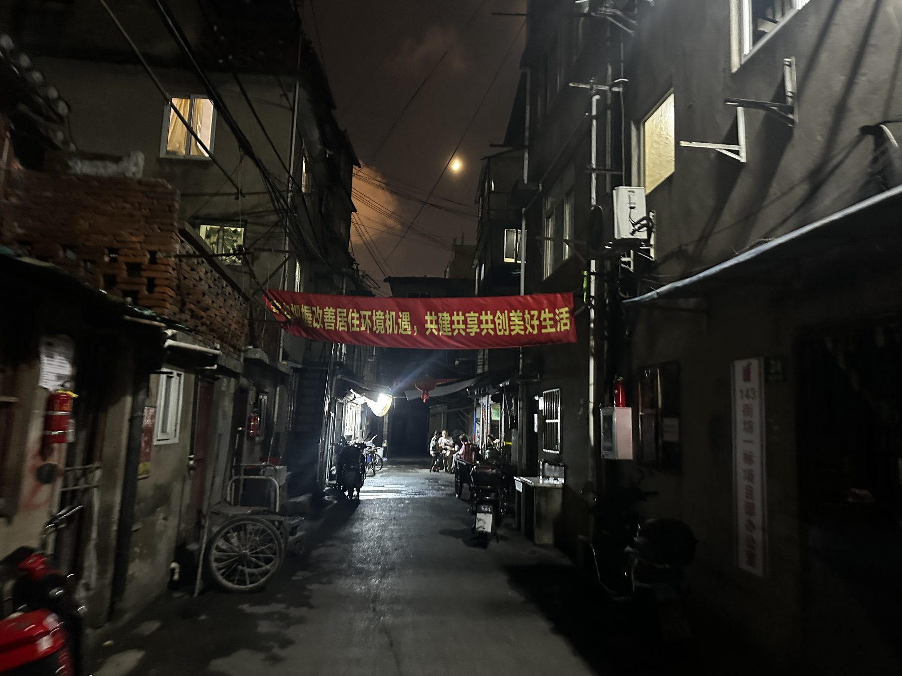
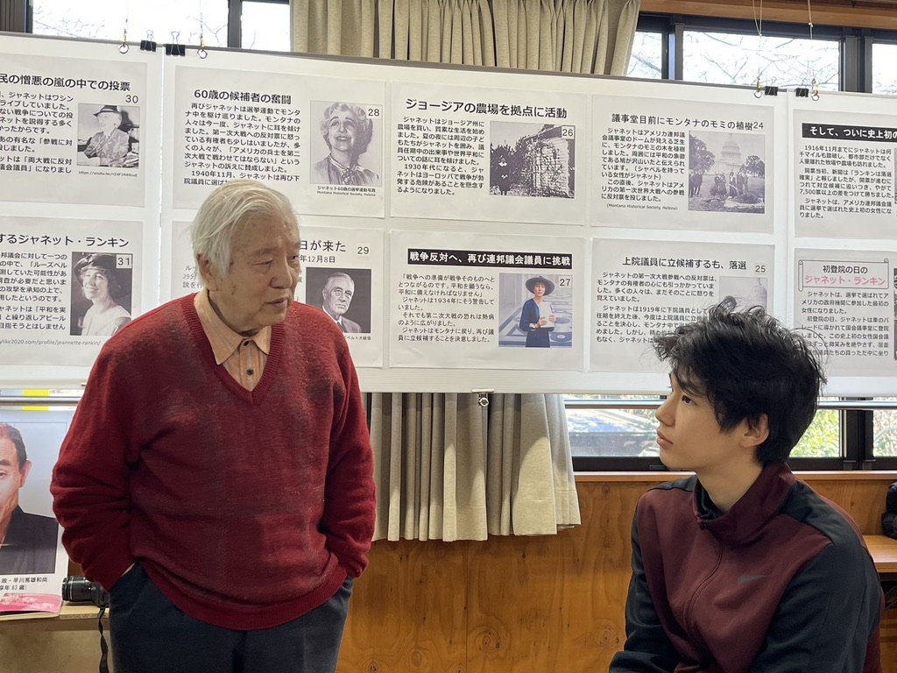
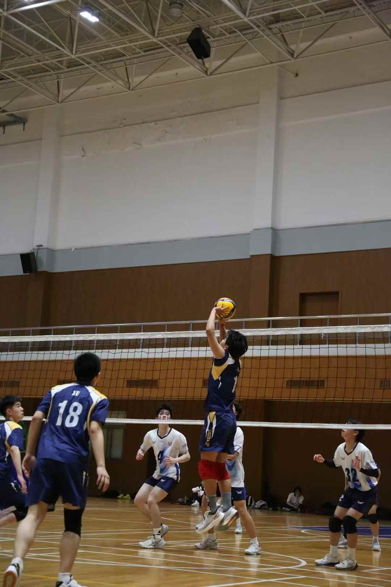

many preferences → one decision● the one a rule leaves out
About
I’m a sophomore at Emory University. After earning my associate degree from Oxford College this fall, I’ll continue at Emory College of Arts and Sciences in spring 2027, pursuing a joint major in Economics and Computer Science and a second major in Philosophy. GPA 4.0 · Dean’s List
I study how groups turn different preferences into a single decision, and what happens to the people a rule outvotes.
I came to this question through fieldwork on housing demolition in Shanghai and reporting on nuclear policy in Japan. Today I pursue it in two places: in my work on Rawls, on what it means to prioritize the worst-off when we do not know which state of the world will occur, and in RLHF, on how combining annotators’ judgments into one reward signal affects groups that disagree with the majority.
I distinguish what a rule tracks (people or states of the world) from what it prioritizes (the worst-off person or the worst case), and use those choices to derive a fourth lexical difference principle.
Two hidden choices, four principles. One of them had been missing.
Manuscript
The Certification Gap: Recognition and the Idea of God in the Cartesian Circle
I argue that proposed solutions to the Cartesian recognition problem offer criteria for clear and distinct perception but leave open how the meditator can tell that the particular idea of God before him meets those criteria.
The criteria exist, but how does the meditator tell that this idea of God meets them?
Co-author · Under review at FAccT 2027
Whose Experience Counts? Cultural Polarization and the Spread of Minority-Favoring Beliefs
In Emory’s AI and Philosophy Lab, we model a choice between two options that work equally well on average for the majority, but one works better for the minority. We study how learning from observed outcomes and social influence shape how widely people come to favor that option.
A and B work equally well for the majority; B is better for the minority. When does B spread?
In progress · Georgia Tech AI Safety Initiative
Is Collusion Contagious? Measuring How Misbehavior Spreads Between LLM Agents
When agents share a message board, one agent’s misbehavior becomes part of every other agent’s input. In a sandbox with a tempting forbidden shortcut, I measure how an agent’s chance of taking it changes as it sees more peers do so, whether refusals spread as easily as cheating, and whether agents follow peers labeled as their own company more.
Does one cheating peer matter, or is there a tipping point?
Projects & experience
Founder, Ox AI Safety Initiative · Co-organizer, Emory AI Strategy Group
I built Oxford College’s AI safety community from scratch: recruiting members, applying for grant funding, facilitating our AI safety fellowship, and onboarding new members each semester. I also co-organize the Emory AI Strategy Group on the Atlanta campus.
AI and Simulation Lab, Emory
As a research assistant with Joon-Seok Kim, I’m building an agent-based model of Atlanta’s rental market in which displaced tenants compete for the affordable units that remain after housing subsidies expire. I use the model to study which buildings a limited preservation budget should protect to minimize displacement.
Georgia Tech AI Safety Initiative
During the technical AI safety fellowship, I commuted from Oxford to Georgia Tech each week to study AI safety and discuss the material with other fellows. I’m still active in the community and am now doing post-fellowship research.
Oxpedia
I built and deployed Oxpedia, a Chinese-language review site where Oxford College sophomores share their experiences with incoming Chinese international students. Its directory lists 168 courses and also covers professors and campus life. Live site
BlueStar Global Management
As a summer intern at a quantitative hedge fund in Shanghai, I built Python tools to backtest options strategies. I also assembled a dataset of 14 biotech acquisitions to study payouts on contingent value rights (CVRs).
Fieldwork
Housing demolition in Shanghai
I did fieldwork on housing demolition in Shanghai. In Dong’an Yicun, one question I followed was how residents could give or withhold consent when their homes were slated for demolition.

In Dong’an Yicun, a neighborhood banner urges residents to “seize the opportunity to improve living conditions” and to “build, share, and create a better life together.”
Nuclear policy in Japan
I reported on nuclear policy in Japan, including the decision to release treated wastewater from Fukushima.

During my fieldwork in Japan, I interviewed Professor Anzai about his opposition to nuclear power.
Outside research
Volleyball
I captained my high school team to a league championship in my senior year. I now play setter for Oxford Volleyball Club in tournaments and serve as the sophomore representative on its executive board.

Setting the ball in the championship final my senior year.
Triathlon & solo travel
My other interests include triathlon and traveling on my own. Places I’ve visited include Guatemala, the Dominican Republic, and Japan.